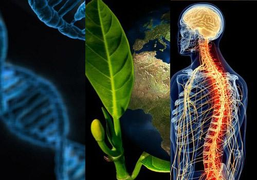

LA IMPORTANCIA DE LA BIOLOGÍA EN LA TIERRA
La biología actual sigue teniendo los mismos objetivos que la biología de otros tiempos:
llegar a comprender la naturaleza de la vida, cómo fue su origen, por qué mecanismo se rige y cómo será
la vida en el futuro del hombre. En los momentos actuales es muy difícil predecir el futuro de cualquier
ciencia, pues éste está muy ligado al destino de la humanidad que crea y desarrolla la ciencia. En el caso
de la biología, la predicción es aún más difícil, pues el hombre, al mismo tiempo autor de la ciencia, es
también, por lo menos en parte, objeto de estudio en esta ciencia, y esta situación introduce factores
éticos en la investigación biológica, los cuales pueden interferir en el desarrollo de algunas de sus
direcciones, acelera o retarda su ritmo o su aplicación.
La biología, de acuerdo con nuestro medio ambiente y con las situaciones que son para nuestro
beneficio, estudia y tiene que ver con el origen de las enfermedades, el control de las plagas, los recursos
alimenticios y su calidad, la explotación sustentable de los recursos naturales, el mejoramiento de las
especies productivas, el descubrimiento y la aplicación de las medicinas, el estudio de las funciones de
los seres vivientes. Su estudio es importante porque a donde veamos hay vida, nosotros somos vida y es
importante saber cómo funcionamos a nivel celular y molecular para cuidar nuestro cuerpo, también
importa el estudio de los virus y bacterias para saber cómo se replican y de qué manera infectan al
cuerpo en el que se encuentran
